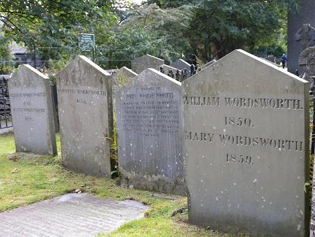

Is it romantic how all my elegies eulogize me?
I'm not cut out for all these cynical clones
These hunters with cell phones
Take me to the lakes where all the poets went to die 
I don't belong, and my beloved, neither do you
Those Windermere peaks look like a perfect place to cry
I'm setting off, but not without my muse
What should be over burrowed under my skin
In heart-stopping waves of hurt
I've come too far to watch some namedropping sleaze
Tell me what are my words worth
Take me to the lakes where all the poets went to die
I don't belong, and my beloved, neither do you
Those Windermere peaks look like a perfect place to cry
I'm setting off, but not without my muse
I want auroras and sad prose
I want to watch wisteria grow right over my bare feet
'Cause I haven't moved in years
And I want you right here
A red rose grew up out of ice frozen ground
With no one around to tweet it
While I bathe in cliffside pools
With my calamitous love and insurmountable grief
Take me to the lakes where all the poets went to die
I don't belong, and my beloved, neither do you
Those Windermere peaks look like a perfect place to cry
I'm setting off, but not without my muse
No, not without you